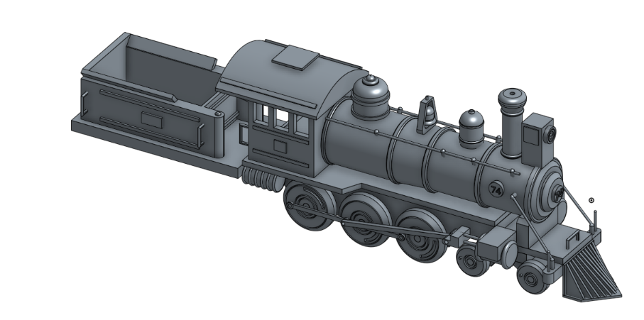
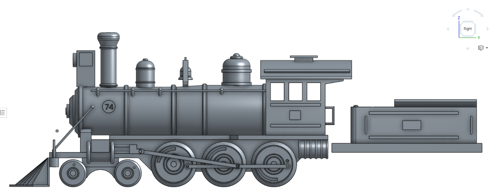

CAD Train


In my freshman year of high school I took a CAD class which focused mainly on using Onshape but also touched a tiny bit on using Creo. One of the last projects that we worked on in the class was creating a 3D toy virtually on Onshape from an original 2D blueprint drawing for the toy. I worked in a group of 3 students to create this toy train.